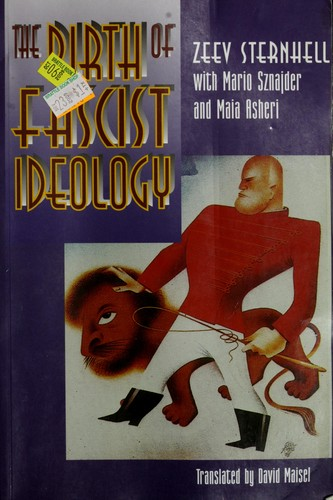

48:14 · 2 OPERE
Cos'è il fascismo?
Il filo del discorso
Dr Divago affronta il fascismo come problema di conoscenza storica e di identificazione politica. Parte dalla distanza fra dichiararsi fascisti e conoscere il regime, quindi collega selezione delle notizie, appartenenza di gruppo e difficoltà di rivedere le proprie convinzioni. Il riferimento a Nascita dell’ideologia fascista introduce il rapporto fra nazionalismo, socialismo rivoluzionario e origini culturali del movimento. La ricostruzione passa dall’interventismo di Mussolini allo squadrismo, al delitto Matteotti e alla dittatura, poi alle guerre e alla gestione del passato nel dopoguerra. Nella parte conclusiva il relatore contesta l’uso contemporaneo delle etichette e interpreta alcune contrapposizioni politiche come conflitti funzionali al potere. Sono tesi e giudizi del relatore, distinti dalle verifiche storiche: le note precisano cronologie, Aventino e limiti dell’amnistia del 1946. Il filo comune è l’invito a sostituire l’adesione identitaria con lo studio, senza fare della polemica una prova delle proprie interpretazioni.
I libri nel discorso

Nascita dell’ideologia fascista
Note sul riferimento
Copertina della traduzione inglese: Copertina autentica di The Birth of Fascist Ideology: From Cultural Rebellion to Political Revolution, Princeton University Press, traduzione David Maisel, ISBN paperback9780691044866. Il catalogo data la prima edizione inglese al 1994; non viene attribuito automaticamente questo anno alla specifica tiratura paperback illustrata. L’edizione italiana citata è Baldini & Castoldi 1993, traduzione Gianluca Mori; originale Fayard 1989. Immagine inglese distinta dalla edizione italiana del filmato.
Copertina della traduzione inglese Princeton, non della traduzione italiana Baldini & Castoldi 1993 citata. I tre autori sono Sternhell, Sznajder e Asheri; traduzione inglese David Maisel. Anno della singola tiratura paperback non verificato.
Titolo e Sternhell espliciti; Baldini & Castoldi 1993 e originale Fayard 1989. Coautori verificati nei cataloghi.

La Repubblica
Identificazione probabile
Note sul riferimento
Copertina: Laterza · La Repubblica · edizione con testo a fronte di riferimento
Immagine associata all’ISBN di riferimento e controllata visivamente; edizione e traduzione non identificate come quelle citate o lette nel video.
Mito della caverna riconoscibile; titolo del dialogo non pronunciato, identificazione probabile.